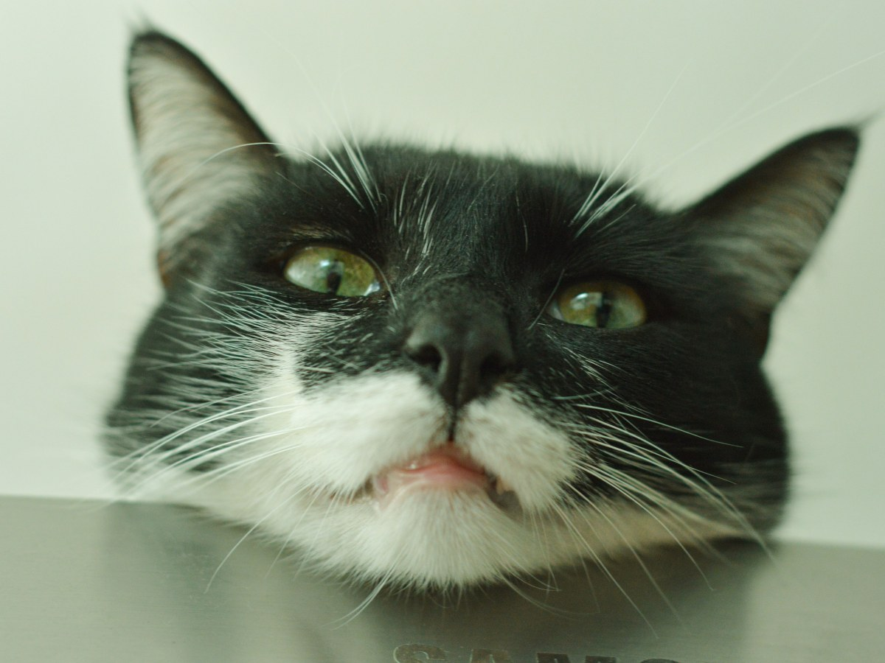
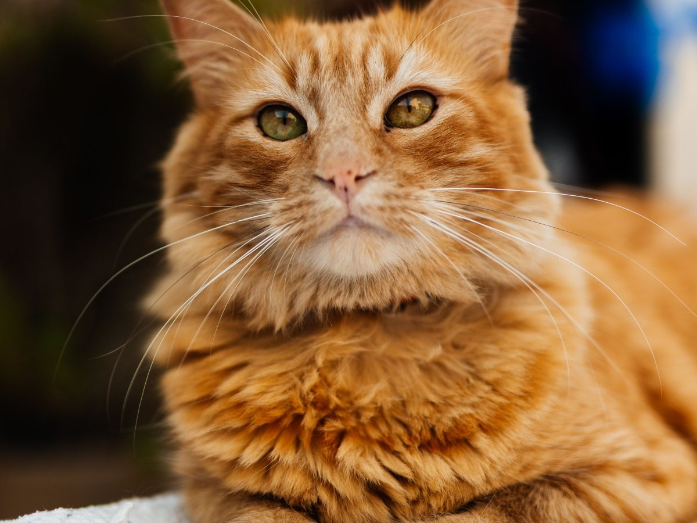
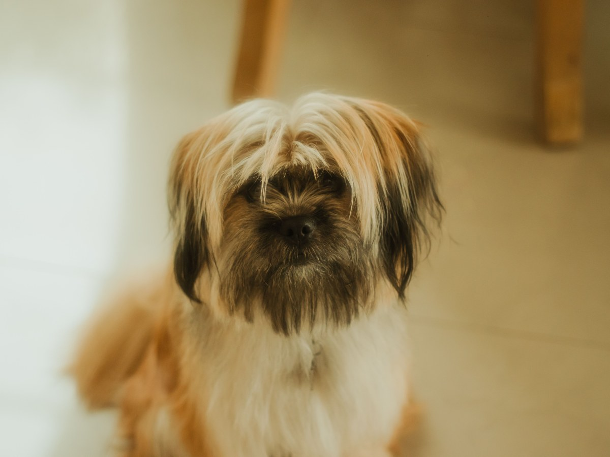
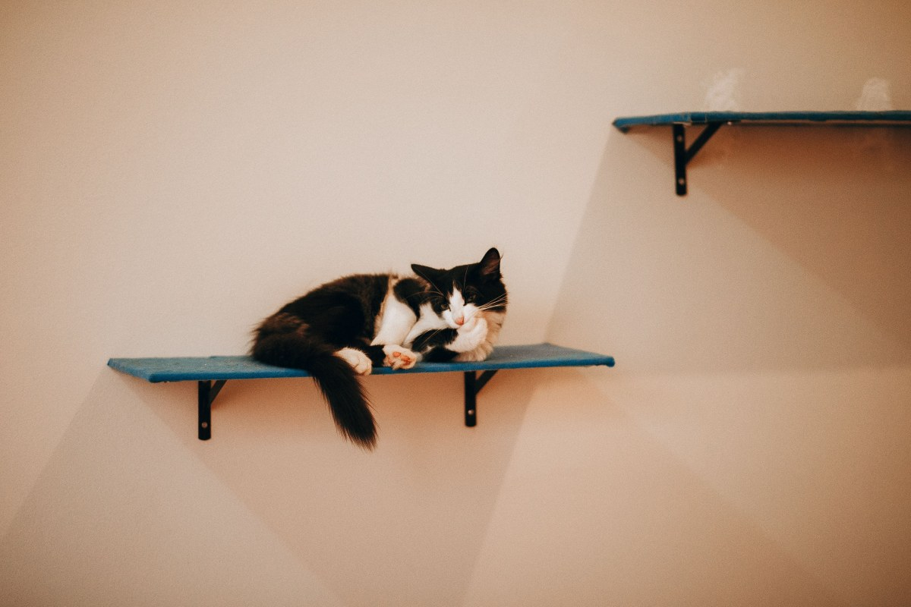
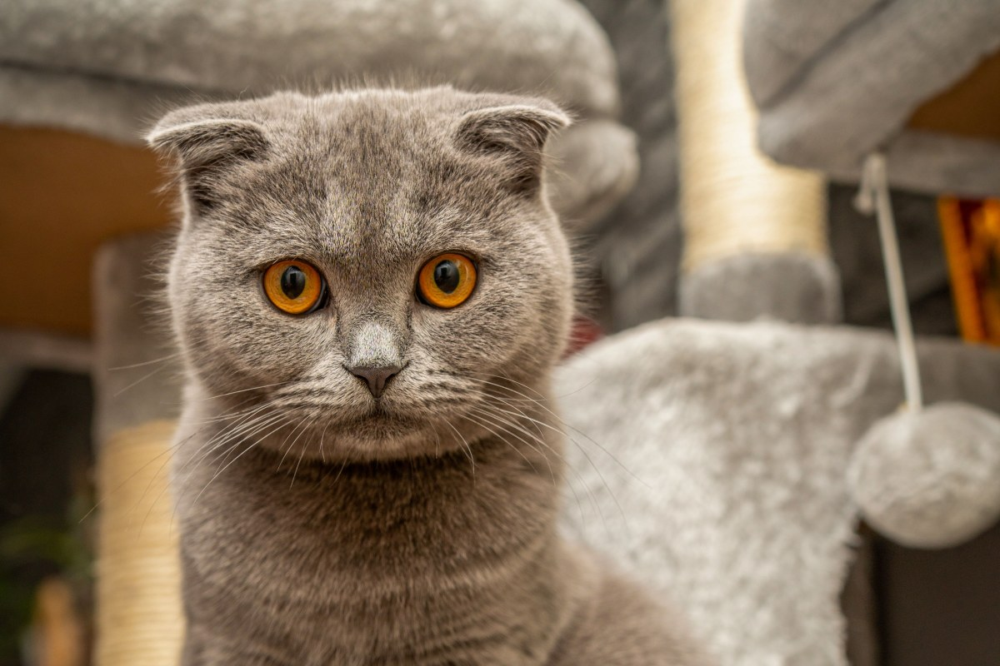
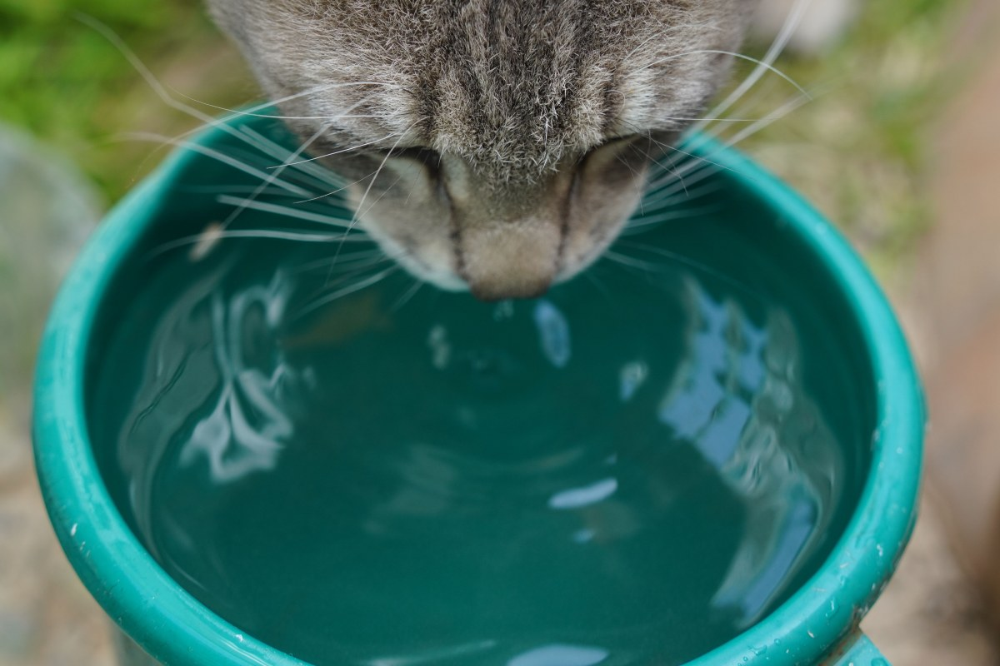
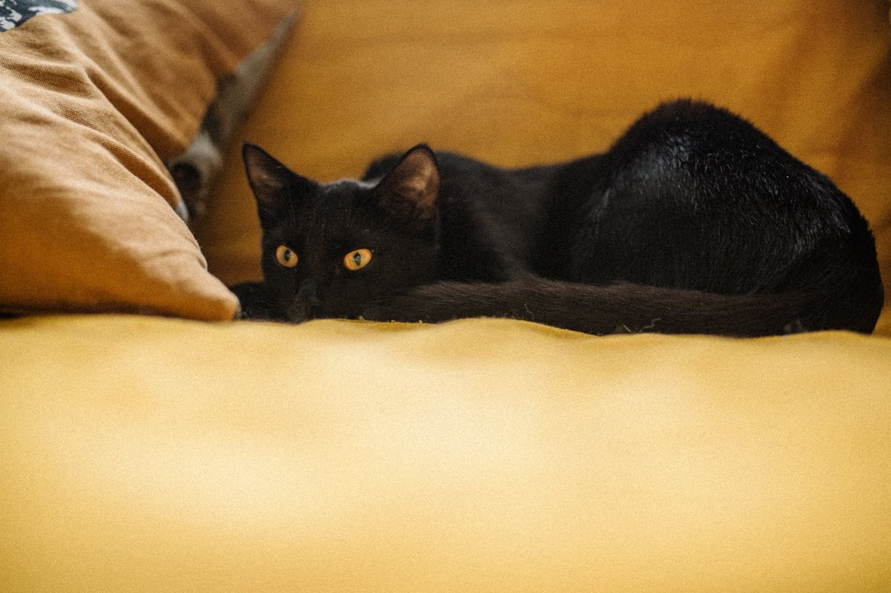
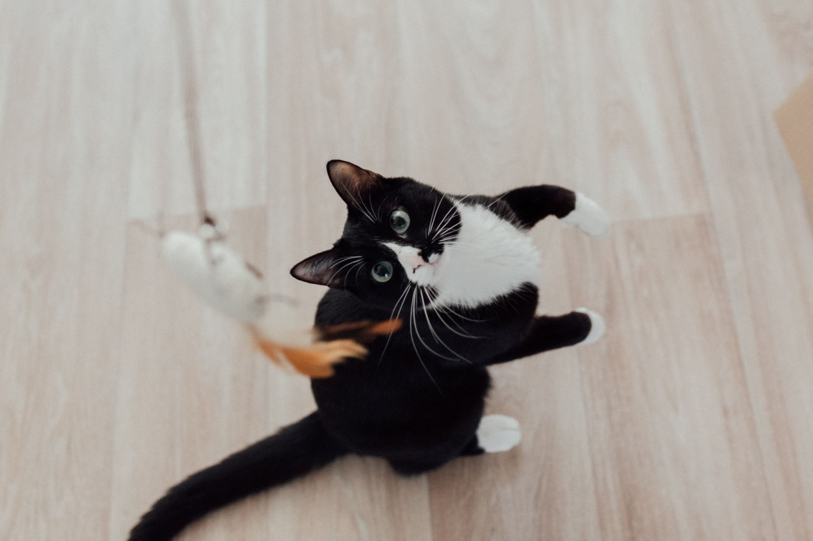
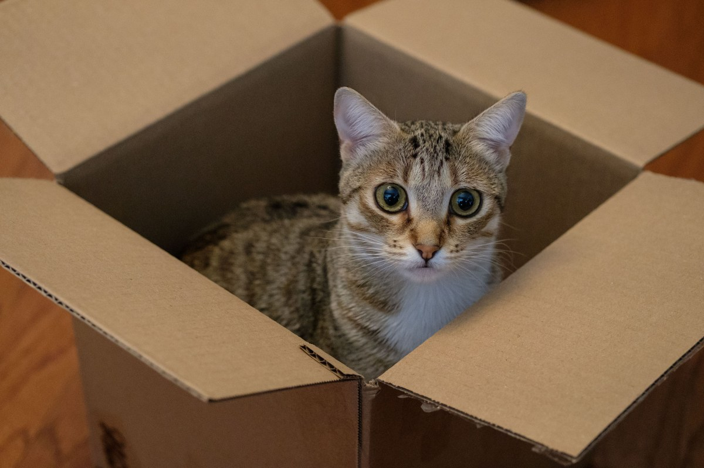

La Florida · Pasaje Santa Aurelia 7605
Un gato que no sale también pide cosas.
Clínica de barrio con 337 reseñas.
- 337reseñas en Google
- 2sucursales: La Florida y Santa Rosa
- 1.264seguidores en Instagram
- 0páginas propias con agenda
Gato de departamento
Seis cosas en pocos metros
- ARENERO
Lejos del plato
En un rincón tranquilo, siempre limpio.
- RASCADOR
Uno firme
Así el sofá se salva.
- ALTURA
Un lugar alto
Repisa o torre para mirar desde arriba.
- VENTANAS
Con malla
Sobre todo desde un segundo piso.
- AGUA Y JUEGO
Más de un plato
Y un rato de juego cada día.
- UNA VEZ AL AÑO
Control
Aunque no salga, igual se enferma.
Consejos generales: su gato puede necesitar otra cosa.
Su mundo cabe en un departamento. Su salud, no.
En Santa Aurelia 7605
Lo que hay en Lawen
-

Consulta
Medicina
Perros y gatos.
-
Por dentro
Ecografía y radiología
Y endoscopía.
-

Quirófano
Cirugía
Y hospital.
-

Ultrasonido
Limpieza dental
Sin raspar a mano.
-

Prevención
Vacunas
Al día.
-

Además
Peluquería canina
Y farmacia con alimentos.
Servicios que la misma clínica declara.
337 reseñas en La Florida.
Pasaje Santa Aurelia 7605
Caja, repisa y ventana
La vida adentro






Fotos de referencia: ninguna es de la clínica.
Dónde estamos
Santa Aurelia 7605, La Florida
- Dirección
- Pasaje Santa Aurelia 7605
- Teléfono
- (2) 2285 7604
- Lun a sáb
- 9:00–19:00
- Domingo
- Desde las 10:00
También atienden en la sucursal de Av. Santa Rosa 6390.
Pasaje Santa Aurelia 7605, La Florida Abrir en Google Maps
Para el dueño
Qué es real y qué falta
Lo verificado
Dirección, teléfono, horario de semana, servicios, sucursal y reseñas.
Lo de ejemplo
La lista del gato de departamento y las fotos.
Lo que falta
El horario del domingo, sus 15 años y el equipo.